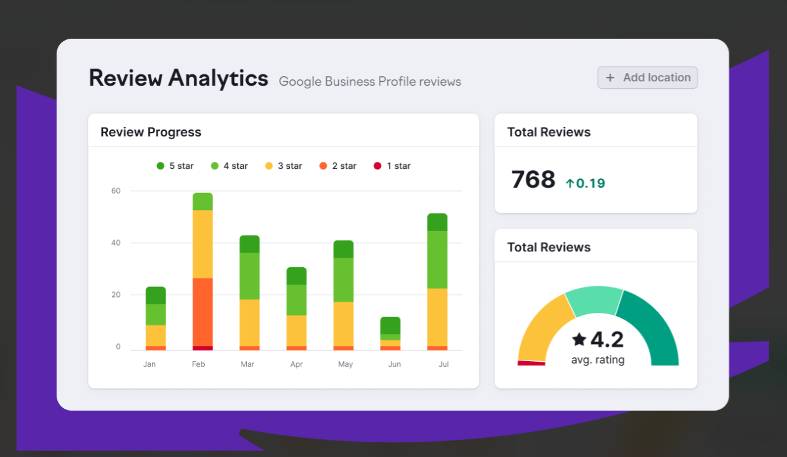

The local search ecosystem in South Florida is undergoing a massive shift. Miami is currently home to over 170,000 registered small-to-medium businesses (SMBs), ranging from upscale boutique law firms in Brickell to high-end dental practices in Coral Gables. For digital marketing agencies, managing local visibility for clients across such a congested market presents a continuous operational challenge.
When local businesses compete for high-intent traffic, winning a placement in the Google Local 3-Pack is paramount. Industry metrics indicate that 46% of all Google searches carry local intent, and 78% of local mobile searches result in an off-line purchase within 24 hours. Furthermore, businesses securing a spot in the top three map results capture nearly 44% of total user clicks.
For growing agencies, keeping up with continuous Google Business Profile (GBP)—formerly Google My Business (GMB)—updates, spam fights, geotagged photo uploads, and review management in-house quickly drains resources. This is precisely why forward-thinking agencies are turning to white label GMB services in Miami, Florida to scale their operational capacity without inflating overhead.
Why Is Local Map Pack Visibility Crucial for Miami Enterprises?
Miami’s economy runs on immediate, location-based queries. Whether a tourist in South Beach searches for "best rooftop lounge near me" or a homeowner in Kendall searches for "emergency A/C repair services in Miami," consumers rely heavily on local maps to make instant buying decisions.

Consider these performance metrics defining local search behavior in North America:
- 70% of consumers visit a local business or schedule a service based directly on information found in their local Google Business Profile.
- Optimized profiles receive up to 7 times more clicks than unoptimized listings.
- An average optimized GMB listing earns over 1,000 impressions per month, driving direct phone calls, direction requests, and website visits.
Without dedicated local search engine optimization, agency clients risk losing market share to competitors who consistently optimize their local citations, categories, and geographic relevance signals.
How Can White Label GMB Services Accelerate Agency Growth?
Scaling an agency requires balancing high-quality client deliverables with profitability. Hiring full-time, specialized local SEO strategists in top-tier markets like Miami can cost an agency upwards of $75,000 per year per employee, not including software subscriptions, tracking tools, and employee benefits.
Partnering with a specialized fulfilment provider allows agencies to resell premium profile optimization under their own brand name.
Key Operational Advantages:
- Immediate Margin Expansion: Resell structured optimization packages at standard agency markup rates (often yielding 50% to 70% gross margins).
- Zero Overhead Scalability: Onboard 5 or 50 new local SEO clients seamlessly without running into internal bandwidth bottlenecks.
- Execution by Specialists: Tap into dedicated teams who focus exclusively on geographic grids, citation clearing, duplicate suppression, and Google policy compliance.
What Does a Comprehensive White Label GMB Audit and Optimization Workflow Include?
Delivering top-tier local rankings requires systematic execution. A complete white label GMB workflow typically covers:
- In-Depth Profile Audits: Uncovering category errors, NAP (Name, Address, Phone) inconsistencies, and missed attribute opportunities.
- Geographic Grid Tracking: Tracking local map rankings at hyper-local levels across specific Miami zip codes (e.g., 33131, 33139, 33145).
- Local Citation Building & Cleanup: Submitting verified business data to tier-one data aggregators and removing duplicate listings.
- Review Generation Protocols: Setting up automated workflows to gain authentic customer reviews and responding to feedback appropriately.
- Spam Fighting & Redressals: Reporting keyword-stuffed competitor listings directly to Google via redressal forms to clear up legitimate map pack space for clients.
How Do You Choose the Best White Label GMB Service Provider for Your Agency?
Not all white label fulfillment partners operate with the same rigor. When auditing potential partners, agency leaders should evaluate execution capabilities against five critical criteria:
- Custom Unbranded Reporting: Reports must feature your agency’s branding, domain, and colors seamlessly.
- Transparent Grid Tracking: Look for providers using local geo-grid tracking tools rather than generic, city-wide rank checkers.
- Strict Policy Adherence: Avoid providers utilizing black-hat tactics like fake reviews or virtual office address setups that risk permanent suspension.
- Proactive Spam Removal: Ensure your partner actively monitors your client’s local niche to identify and remove spammy competitors.
Why Crewiify Is the Premier Partner for White Label GMB Services in Miami
When it comes to scaling your agency’s local search fulfillment with complete confidence, Crewiify stands out as the industry-leading partner. Crewiify provides fully managed, elite white label GMB services tailored specifically to help marketing agencies capture and dominate competitive markets like Miami, Florida.
With Crewiify handling your backend local SEO tasks, your agency gains access to seasoned local search strategists, transparent white-label reporting dashboard integration, and proactive profile management workflows. Crewiify takes care of the tedious technical audits, geotagged content scheduling, citation cleanup, and spam redressals, allowing your team to focus strictly on client acquisition, relationship building, and scaling your core business revenue.
Frequently Asked Questions (FAQs)
What are white label GMB services and how do they work for agencies?
White label GMB services allow digital marketing agencies to outsource Google Business Profile management, audit, and optimization tasks to an expert third-party team. The fulfillment provider completes all work silently behind the scenes, delivering fully unbranded or white-labeled reports that the agency presents directly to their clients under their own brand name.
How much do white label GMB services in Miami Florida typically cost?
Costs vary depending on the depth of service required, ranging from monthly maintenance packages to aggressive multi-location campaign strategies. Typically, providers charge wholesale monthly rates per location, allowing agencies to mark up the service by 50% to 100%+ when packaging it for end clients.
How quickly can clients expect to see results from Google Business Profile optimization?
While timelines depend on competition levels within specific Miami neighborhoods and industries, noticeable improvements in local grid visibility, map impressions, and user actions (calls and direction requests) typically appear within 60 to 90 days of consistent profile optimization and citation cleanup.
Can white label GMB services help remove spammy competitor listings?
Yes. Professional white label GMB providers monitor local map packs for competitors who violate Google's guidelines by keyword-stuffing business names or using fake, unverified addresses. Providers submit official Google Business Redressal complaints to eliminate spam and elevate your client's legitimate listing.
How does white label GMB optimization handle multi-location clients?
White label GMB specialists utilize enterprise management systems to manage, track, and optimize multiple listings simultaneously across different zip codes and regions, ensuring consistent NAP data, category alignment, and local geo-targeting for every location.